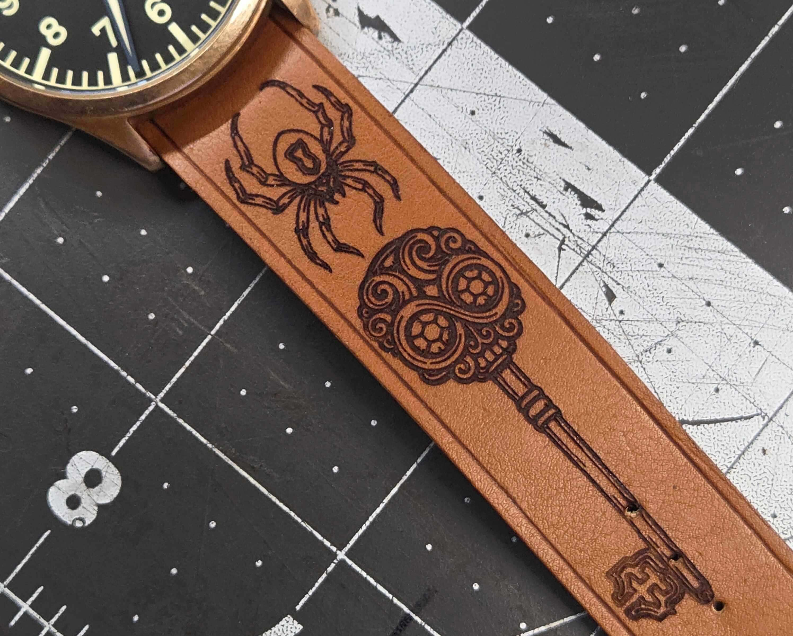
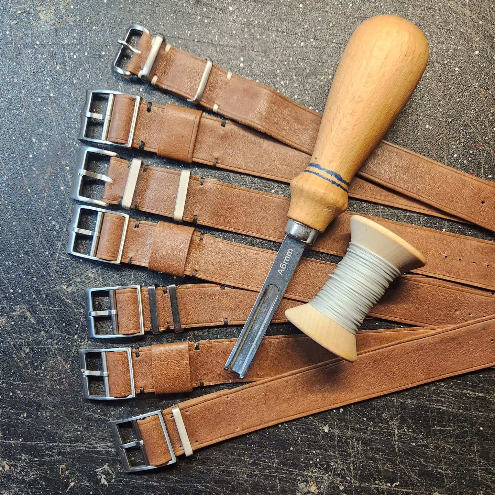
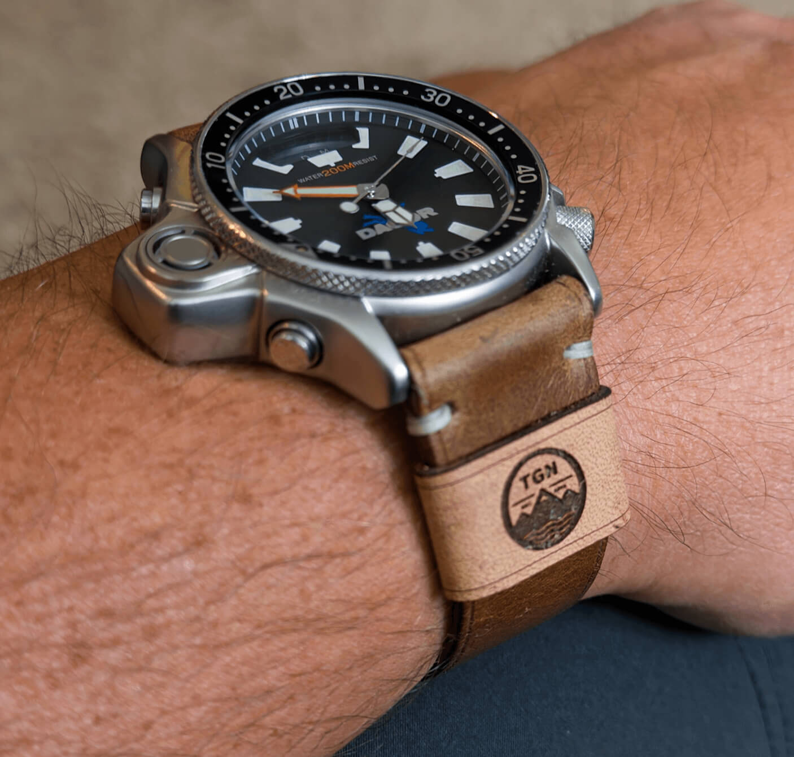
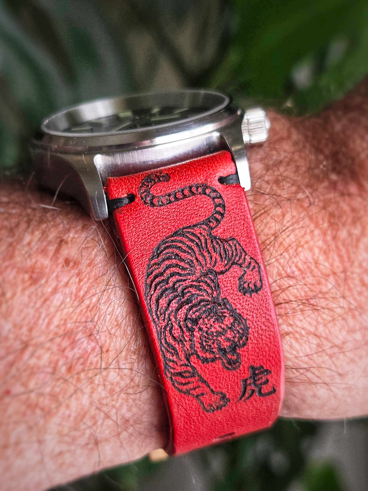
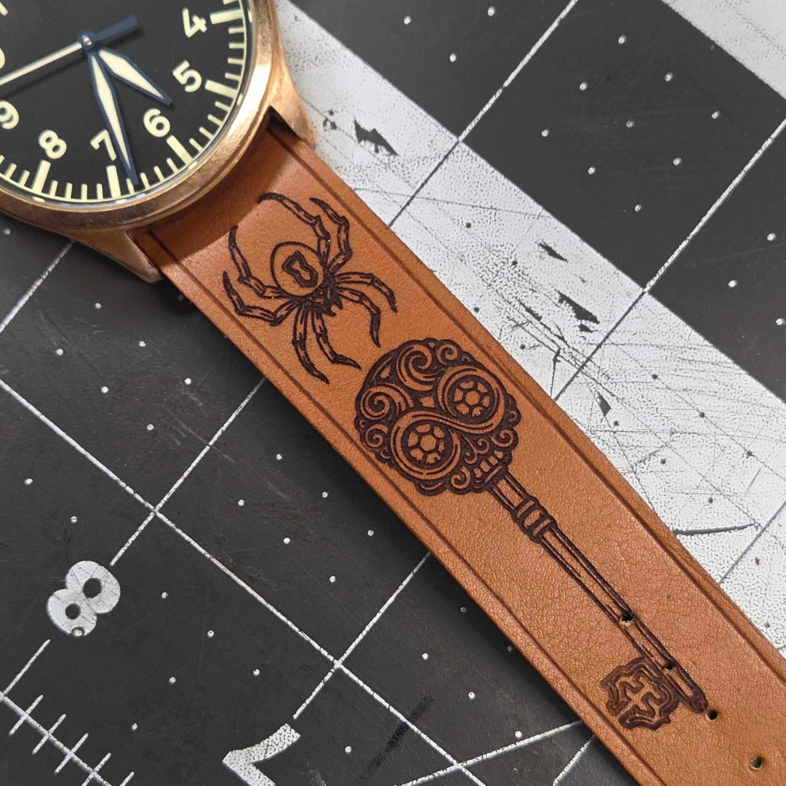
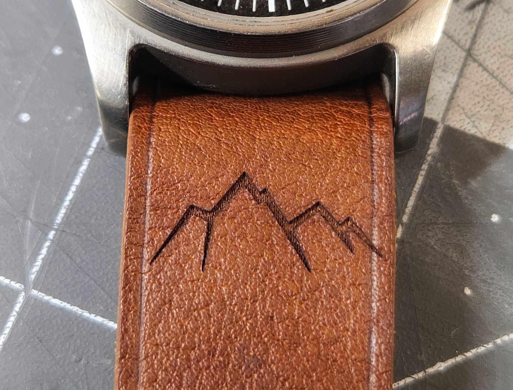
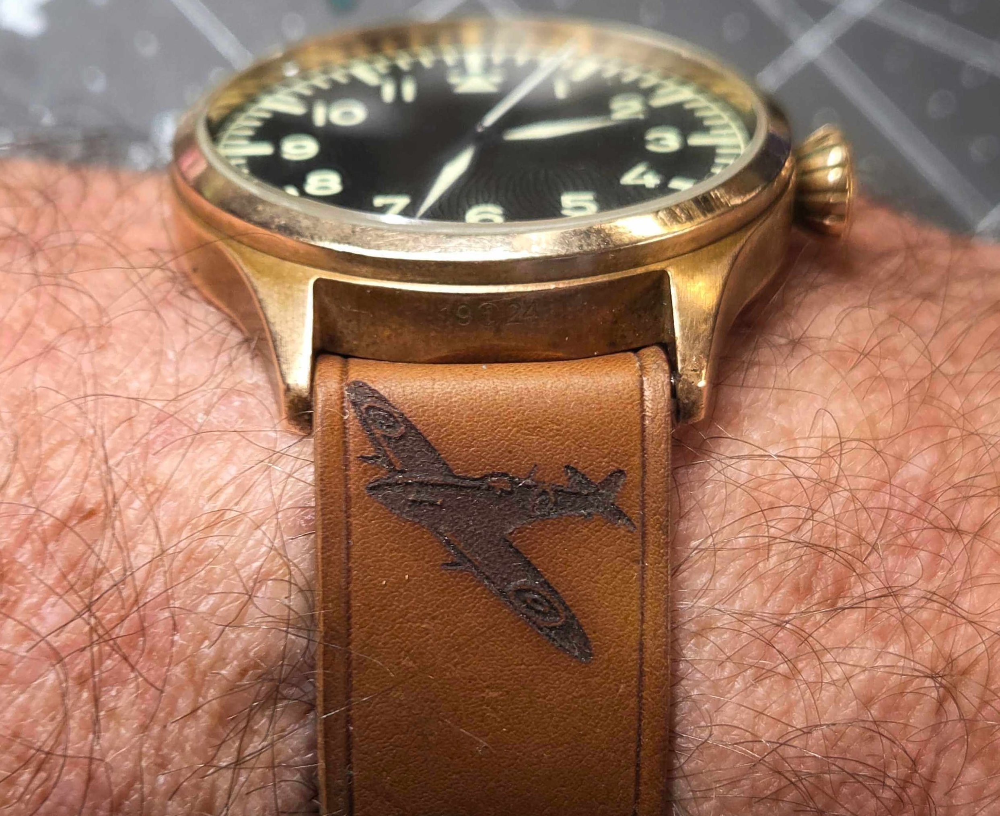
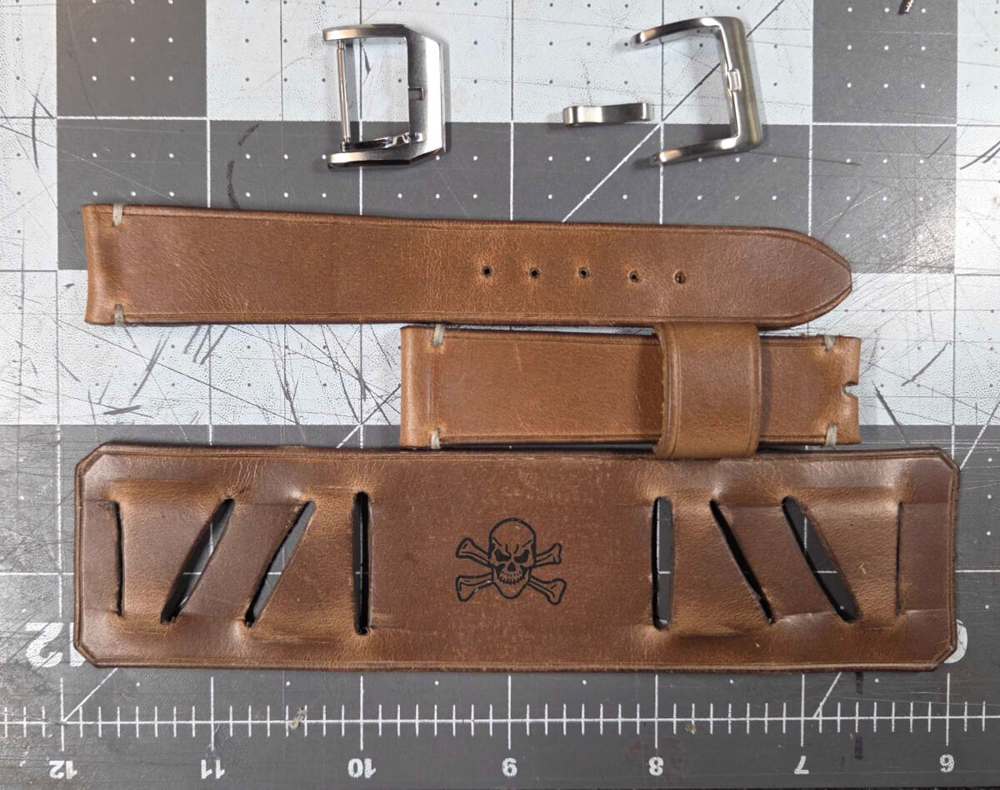

A Closer Look at the One-of-One Laser Engraved Straps by Charles, from Chas In Time
In a hobby that blindly follows tradition, heritage, and "the same way things have always been done," I am always curious when someone moves in a new direction. Charles, the solo artisan behind Chas in Time, isn't trying to disrupt the strap world or chase industry trends. He is simply enjoying a narrow space he cares about and pushing it forward in his own way.
 Nenad Pantelic • February 12, 2026
Nenad Pantelic • February 12, 2026

I first came across Charles through the TGN Slack community. What drew me in was that his work felt different. Not louder. Not driven by hype. Just different.
First of all, he built straps to scratch his own itch. He happily tackled challenges that mass-market brands ignored. He created things he always wanted to have but couldn't just buy.
Single-pass leather straps with ladder buckles, super specific bund straps, historical braided leather straps, straps for oddly shaped lugs... He made it all. And made them very well.
Then TGN crew members started asking for custom made straps. Crew members loved his work. Actually, I think they loved that he cared for them, and was happy to work on their funky custom requests.

The more I looked into what Chas was doing, the clearer it became: this isn't just customization or a business venture. It's something more personal to him. He likes interacting with other enthusiasts, he regularly goes to meetups and collectors hangouts, and he enjoys making straps for the crew.
Which brings me to his latest implementation - laser engraving.
Laser engraved straps
Most leather personalization is done the traditional way: a metal stamp, a monogram, maybe a simple logo. It is classic, and it works.
But it also has limits especially if a collector is asking for complex artwork, detailed graphics, custom typography… All of that requires custom tooling, which makes it impossible for one-off ideas.
I once asked a well-known strap brand about a custom logo, and their reply was: "We can do it if you order minimum 50 straps."
Charles took a different path. I think that instead of working around the limitations, he removed them entirely. He decided to use a laser as his tool.
With laser engraving, the design goes straight from digital file to leather. Family crests, military insignia, personal artwork, club logos, patterns across the entire strap...
Anything is possible.

Something meaningful to mark
When I asked Charles how he feels about these engravings, he gave me an answer that stuck with me:
"I kind of think of them as strap tattoos."
Makes sense. I realized his work isn't just about adding decoration. It's about expression.
People commission these designs to mark something meaningful: a milestone, a memory, a personal identity, a connection to a group or profession. Just like a tattoo, the design carries intention.
But here's the cool part. Unlike a real tattoo, this one lives on a leather strap, not on your skin.
The "canvas" is separate from you. Engraved strap is something you can change out, rotate with your collection, or retire without regret.


The Practical Question I Had
When I first saw laser-burned leather, my immediate thought was: Does this weaken the strap? Is the strap compromised in any way?
The answer, as Charles explained, is NO, but when done properly.
The laser creates a controlled, shallow burn that darkens the leather fibers without cutting through too much into them. On high-quality hides like Buttero, Pueblo, or Shell Cordovan the structural integrity remains intact.
In fact, the engraving becomes part of the leather itself. It won't peel, crack, or fade like surface treatments. Over time, it even develops its own patina, aging alongside the rest of the strap.
Like any premium leather, basic care with occasional conditioning is all it takes to keep it looking great.
Limitless Design
Because the process is digital-to-physical, the constraints of a stencil are gone. With laser in use, the designs and options are almost limitless.
The interesting thing is that Charles only started doing this recently, but the designs so far have been really cool. I can't wait to see what people come up with next.
Also, I love the fact that, with laser as a tool, Charles can say yes to weird requests. Big brands have a business model that prevents them from doing that. They can't justify a production run of one. Their minimum order quantities, supply chain optimization, and growth targets all work against this kind of customization.



When I was thinking about what I would engrave, I even considered commissioning a laser engraving on the underside of my watch strap.
I like the idea of having something deeply personal that remains entirely invisible to the outside world. For sure, my watch projects a specific image to everyone who sees it, but there's a quiet satisfaction in knowing what's hidden underneath.
On Owning Something Yours
Most of us spend our lives wearing things chosen by committees, as they say. Designed for demographics, optimized for margins. Here is your phone, here is your laptop, here are your shoes and jeans.
But there is something fulfilling about owning an object made specifically for you, by someone who didn't ask why you wanted it that way. I still haven't decided what I'd engrave. But I like knowing the option exists.
If you're curious about what's possible, the best place to start is his Instagram: @chas.in.time.
Even if you're not planning to order, it's worth browsing. The creativity alone is inspiring.